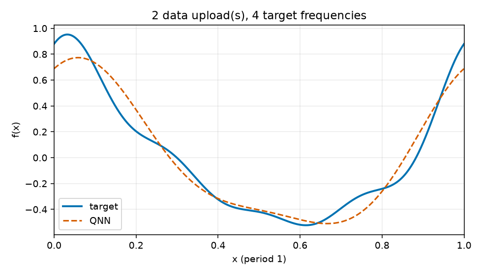
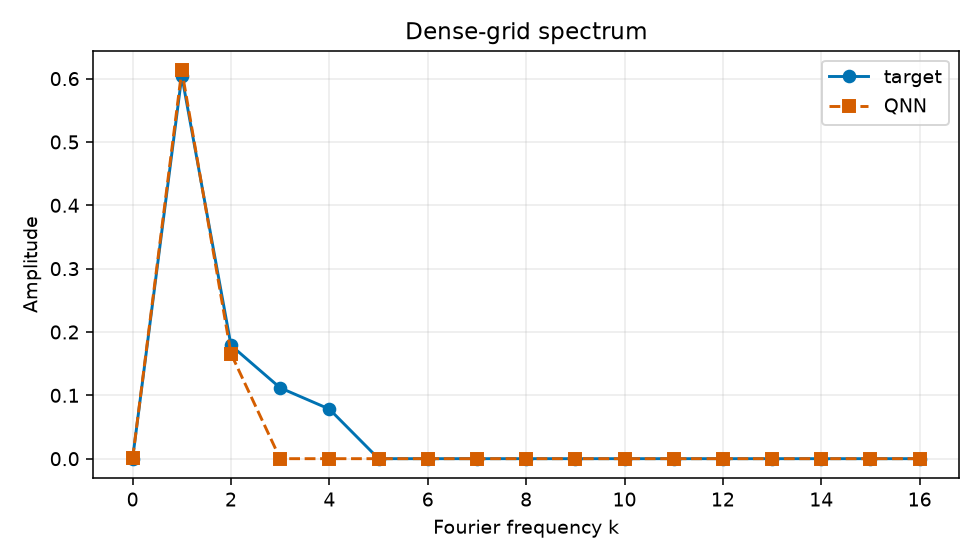

Uploads: 2; target frequencies: 4; train/validation/test: 64/128/512; objective: empirical training MSE only.
{
"run_id": "20261017T024020935695Z_reupload-2_k4_seed-0043_9d1b5cd9",
"comparison_group": "periodic-function-mse-zero-offset-reupload-sweep-z1-readout",
"data_uploads": 2,
"n_target_frequencies": 4,
"seed": 43,
"data_seed": 314159,
"dataset_sizes": {
"train": 64,
"validation": 128,
"test": 512
},
"target_components": [
[
1,
0.55,
0.25
],
[
2,
0.16,
0.08
],
[
3,
0.1,
0.05
],
[
4,
0.07,
0.035
]
],
"target_offset": 0.0,
"objective": "training-set MSE only",
"optimizer": "L-BFGS-B",
"iterations": 13,
"function_evaluations": 240,
"optimizer_success": true,
"optimizer_message": "CONVERGENCE: RELATIVE REDUCTION OF F <= FACTR*EPSMCH",
"initial_train_mse": 0.4571494343411291,
"final_train_mse": 0.007018483248592438,
"validation_mse": 0.008915923669240098,
"test_mse": 0.01062687171300862,
"known_frequency_fourier_baseline_test_mse": 2.8845849053330533e-31,
"target_support": [
1,
2,
3,
4
],
"predicted_support": [
1,
2
],
"frequency_support_threshold_function_amplitude": 0.001,
"support_precision": 1.0,
"support_recall": 0.5,
"target_amplitudes_k0_to_16": [
3.337987438539747e-17,
0.6041522986797286,
0.1788854381999832,
0.11180339887498951,
0.07826237921249267,
3.111669413838609e-17,
1.0782582689195332e-17,
1.9716710816326602e-17,
6.698493011886988e-18,
1.1635421212890542e-17,
2.525458054938055e-18,
8.020732245388063e-18,
4.685641790835123e-18,
4.924865114041699e-18,
3.888524730395962e-18,
1.488532939329537e-17,
8.37948952971858e-18
],
"predicted_amplitudes_k0_to_16": [
0.0004248190484252604,
0.6131455776553302,
0.16574041806275805,
2.6838686538809818e-17,
1.3116279890883871e-17,
1.2282984834285113e-17,
6.8558409934857856e-18,
2.3697604630412773e-17,
5.7868642338042424e-18,
1.1047427642565405e-17,
3.8510726303028724e-18,
4.80313376585394e-19,
5.568198295774426e-18,
5.444238843730198e-18,
7.295985839289577e-18,
2.170754776927838e-17,
9.790738318131855e-18
],
"frequency_amplitude_rmse_k0_to_16": 0.0333244752770701,
"artifacts": [
"dataset.npz",
"metrics.jsonl",
"parameters.npz",
"parameters.json",
"evaluation_outputs.npz",
"function_fit.png",
"spectrum.png",
"report.html"
]
}
